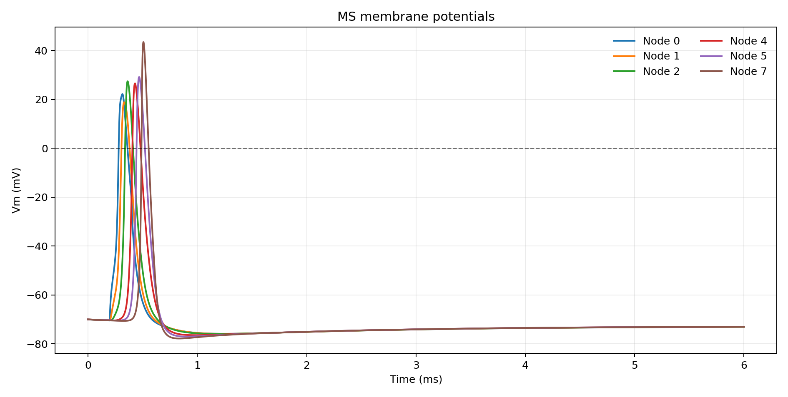
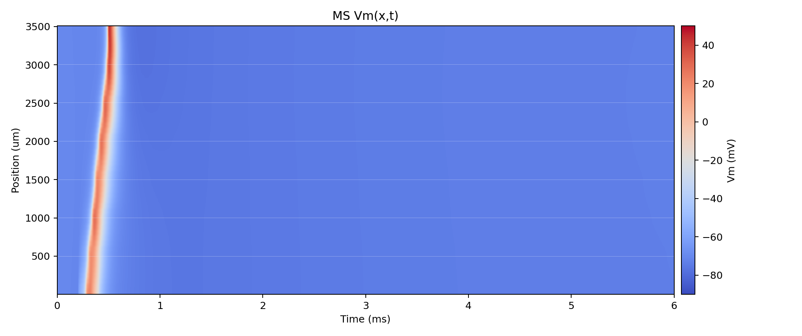
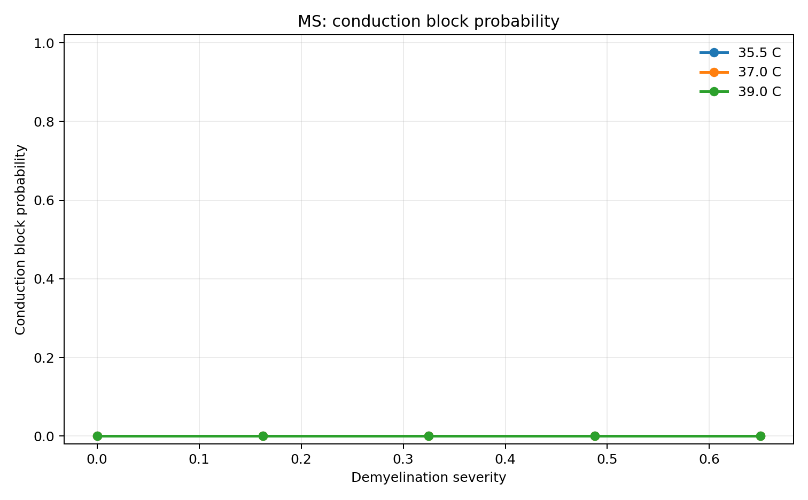
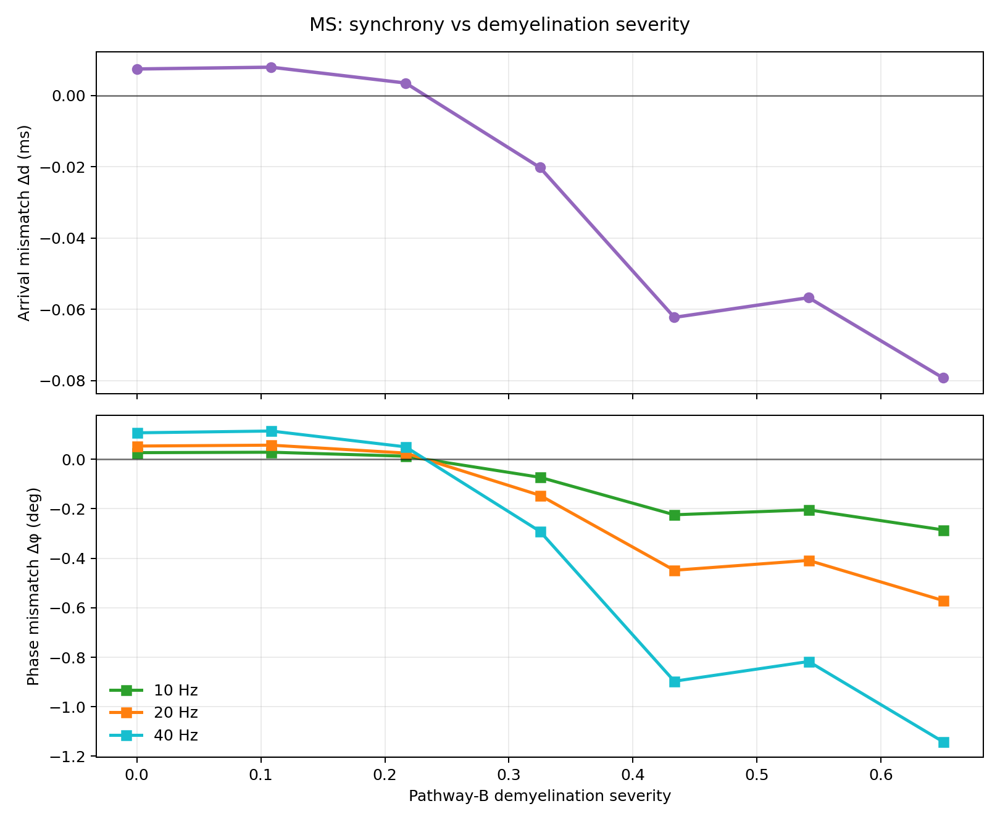

Real-time browser simulation of saltatory conduction with active nodes of Ranvier,
passive myelinated internodes, demyelination effects, pathway synchrony, and disease-style
parameter presets. This is a mechanistic educational model, not a clinical diagnostic system.
These figures are generated from the Python model in this repository. The interactive animation above is
a browser implementation aligned to the same saltatory-conduction principles.

Study-backed Mechanics
Hodgkin AL, Huxley AF (1952), action-potential formalism. DOI